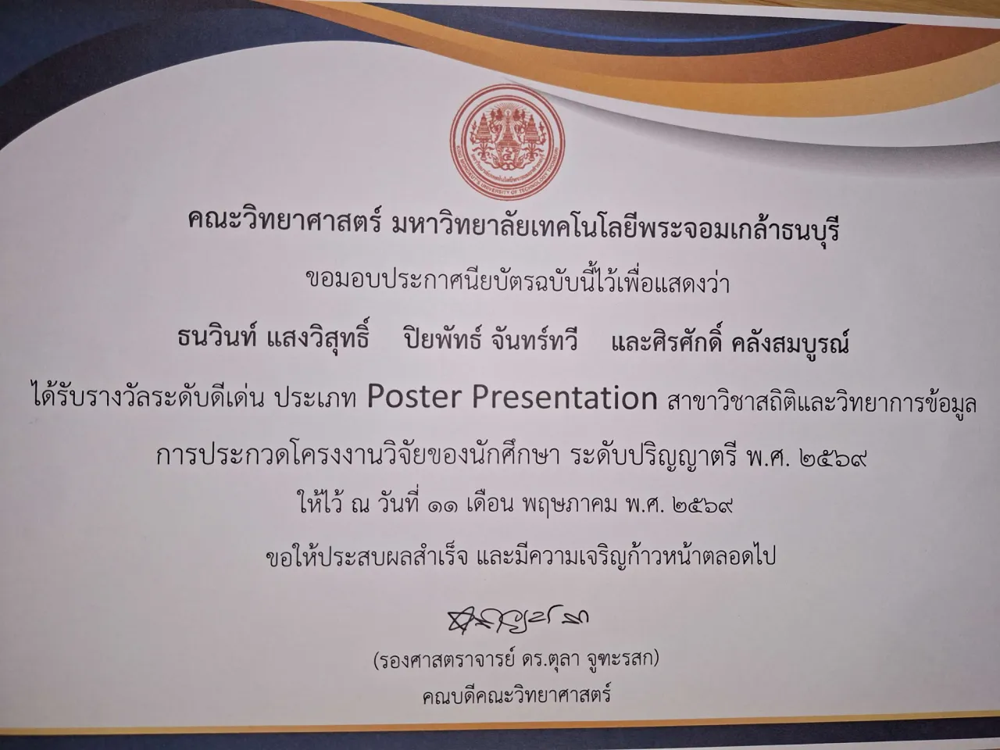

Reported results ผลที่รายงานในเล่ม

First place — graduate-project poster presentation
This project won first place in the department's poster presentation for graduate projects (see the poster PDF).
The figures are XGBoost's results on the 2024 season, as reported in the final report (Thai PDF).
1 · Research question โจทย์และวัตถุประสงค์
Task: a binary classification of whether a driver scores points in a race, which in the current F1 points system means finishing in the top ten.
Unit of analysis: one row is one driver in one race (a race entry). 2019–2024, 2,559 race entries.
Objectives: (1) classify and group circuits by their characteristics, (2) compare the performance of prediction models for a driver's points in each race, and (3) analyse and explain how much each factor contributes to a driver scoring points.
Inputs: only information available before the race — driver and team history, grid position, circuit characteristics and weather.
2 · Data ข้อมูลและที่มา
| Source | What it provides |
|---|---|
| Ergast F1 API | Results, grid positions, pit stops, lap times, standings and status (whether a driver finished) — stored as an archive at data/ergast-f1-data.zip |
| Open-Meteo | Hourly temperature, rain and wind per circuit; the archive is queried in a ±3-day window around each race. Sample responses are committed and a script rebuilds the full table |
| Pirelli Motorsport | Track characteristics: tyre stress, lateral load, grip, downforce, length and number of corners. The filtered table leaves 128 circuits for clustering |
| Race weekend schedule | Session times, used to align the weather window with the race |
Weather alignment: the actual race window is derived from the winner's total race time in lap_times counted from the race start (race day plus local time). Weather is averaged over that window rather than over the whole day.
Large raw files are not committed. The project README lists the download sources, and code/build_weather_circuit.R rebuilds the weather table from the API (about three minutes with network access).
3 · Features and leakage control ตัวแปรและการป้องกัน data leakage
Variables are organised in six groups: basic driver and team information, experience and performance, race data, weather and race context, circuit physical characteristics, and circuit technical characteristics.
| Feature | How it is known before the race |
|---|---|
Age | Computed from date of birth and race day |
Driver_Experience | Number of races the driver started before this one (row_number() - 1 per driver, ordered by season) |
Driver_Podium | Podiums accumulated before this race — lag(cumsum(positionOrder %in% 1:3)) |
Prev_Total_Points | Lagged cumulative points, so the current race is not included |
Constructor_Wins | Team wins accumulated before this race |
Constructor_DNF_Score | Team DNFs accumulated before this race |
avg_temperature, avg_rain, avg_wind_speed | Weather averages over the race window |
cluster | Circuit group from the clustering step |
grid | Starting position, known after qualifying and before the race. It is present in data/final_table_with_cluster.csv and in the v1 / v2 scripts; the Random Forest demo inside the Rmd drops it. |
Cumulative histories are lagged before the current race, so the race being predicted never contributes to its own predictors. Race-derived rates such as
Overtake_Rate are computed from earlier races only.
DNF_flag is built from the finishing status of the previous race, which is post-race information but precedes the race being predicted.
4 · Circuit clustering การจัดกลุ่มสนามแข่งขัน
- Build the circuit table: Pirelli variables (corners, distance, length, tyre stress, lateral load, downforce, asphalt grip and abrasion) plus race-derived rates from Ergast (
Overtake_Rate,Race_DNF_Rate). - Check suitability: KMO and the correlation structure of the variables.
- Reduce dimension: PCA, retaining enough components for the cumulative explained variance.
- Cluster:
daisy(..., metric = "gower")→hclust(..., method = "complete"). The number of groups is chosen with cluster-validity indices, including average silhouette width. The report uses 5 clusters for 128 circuits. - Join back: the cluster label becomes a feature in the per-race modelling table.
The cluster gives the model a description of the circuit instead of an identifier, and the grouping can be explained.
5 · Models ตัวแบบที่ใช้
| File | What it does |
|---|---|
| code/01_data-prep-and-modeling.Rmd | Full feature pipeline, a Random Forest run, and a demonstration that assigns a race field to podium / scoring / no-points slots under the 3 + 7 + 10 quota |
| code/02_modeling-v1.R | Random Forest and XGBoost with expanding-window cross-validation (train before 2024, test on the 2024 rounds) and per-fold metrics |
| code/03_modeling-v2-quota-and-strict.R | v2: nationality bucketing, strict and non-strict quota assignment, grid-searched hyperparameters, and SHAP |
Both modelling scripts read data/final_table_with_cluster.csv from the repository and use the xgb.train / xgb.DMatrix API.
6 · Evaluation การวัดผล
Split: train on 2019–2023, test on every round of 2024. The split follows race order because the task is forward-looking; a random split would let the model see races that come after the one it predicts and inflate the metrics.
Cross-validation: expanding window over race order, 4 folds. Each fold trains on all earlier races.
Result: XGBoost had the highest performance on the 2024 test set (figures above). SHAP places the starting grid position first, followed by the potential and past performance of the team and the driver; circuit type and weather have low influence.
7 · Limitations ข้อจำกัดของงาน
- Sample size: 2,559 race entries over six seasons.
- Pre-race information only: in-race strategy, tyre choice during the race and live simulation are out of scope by design.
- Choice of k: the report uses 5 clusters, while parts of the exploration code cut the tree at 3; the report's choice rests on cluster-validity indices.
- Test horizon: the test set is the 2024 season only; the model has not been validated on a later season.
8 · Reports and awards รายงานและรางวัล
| File | What it is |
|---|---|
| report/Full-Report-F1-Driver-Points-Prediction-TH.pdf | Full project report (Thai) — source of the five metrics and the 5-cluster result |
| report/F1-Graduate-Poster.pdf | Project poster (EN/TH) |
| assets/poster-1st-place-certificate.webp | Certificate for the first-place poster award |